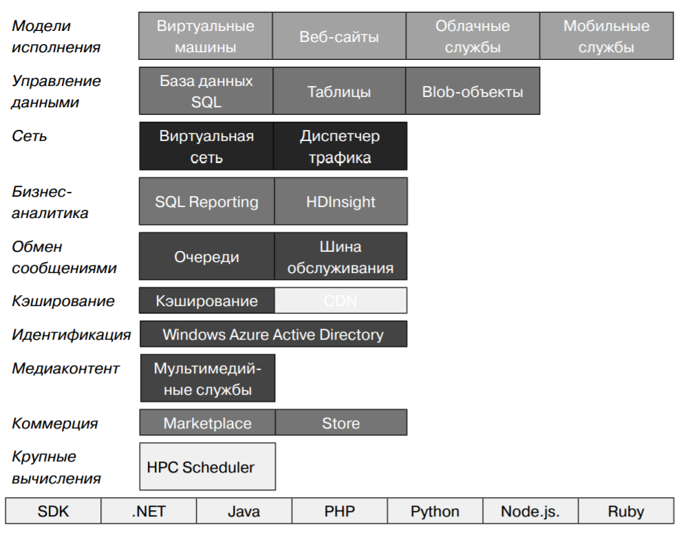
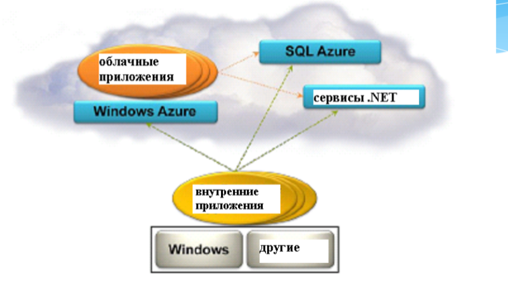

Название лекции
Разработка динамичесих веб приложений
Гладкий Максим Валерьевич / github:MaksHladki
Содержание лекции
Архитектура Windows Azure
Эволюция Windows Azure
- 2006 - создана «команда мечты» для разработки облачной ОС RedDog
- 2006 - команда Indigo (известная как Windows Communication Foundation) приступает к работе над экспериментальным реле коммуникации
- 2006 - команда SQL берет на себя разработку интернет-версии своей службы
- 2007 - три команды начинают сотрудничать друг с другом
- 2008 - объединение команд в проект Azure: службы .NET, онлайн-службы, службы SQL. Предствлена Azure CTP
Следующий этап эволюции
- 2009 - выходит версия CTP 3, подержка доверенного и платформенного кода, геолокация, fast CGI, PHP и Java SDK. Azure становится открытой платформой, выпускается первый официальный SDK 1.0
- 2010 - платформа доступка в 21 стране, реализована поддержка БД более 50 ГБ, полноценная поддержка IIS и службы удаленного рабочего стола
- 2011 - инструмент SQL Azure Reporting, Scheduler SDK для поддержки ресурсоемких параллельных приложений
- 2012 - добавлена архитектура IaaS, выпущен Python SDK. ЦОДы работают в 8 регионах мира
- 2013 - добавлена служба Active Directory
Windows Azure
Windows Azure — это открытая и гибкая облачная платформа, позволяющая бы- стро создавать, развертывать и управлять приложениями в глобальной сети центров обработки данных под управлением Майкрософт. Приложения можно разрабатывать с помощью любого языка, инструмента или платформы. Кроме того, приложения в общедоступном облаке можно интегрировать с имеющейся ИТ-средой.
Основные особенности
- Открытая - поддерживаются многие ЯП и интсрументы
- Гибкая - разнообразие облачных служб (от утилит развертывания до SQL-хранилищ)
- Под управлением Майкрософт - ЦОДы в США, Европе и Азии
- Совместимая - многие компоненты легко интегрирутся с Windows Server
- Собственная сеть CDN
Основные возмоности
- Инфраструктура
- Мобильные приложения
- Интернет
- Медиаконтент
- Интеграция
- Идентификация и управление доступом
- Большие данные
- Разработка и тестирование
- Хранение, архивация и восстановление
- Управление данными
Три ОС в одной концепции
- Windows Server - платформа корпоративного уровня, фундаметр облачных вычислений
- System Center - интегрированная платформа для централизованного управления частными, размещенными и общедоступными облаками
- Windows Azure — открытая, гибкая облачная платформа для разработки, развертывания и управления приложениями и задачами, размещенными в глобальной сети центров обработки данных Майкрософ
Вычислительные службы Windows Azure
Типы приложений
С точки зрения пользователей
- Внутренние (on-premises app) - выполняются на компьютере пользователя
- Облачные - выполняются в среде Windows Azure в ЦОД
Службы Windows Azure
- Вычислительные службы - предоставляют компьютерные ресурсы, на которых работают облачные приложения
- Сетевые службы - предоставляют облачные приложения и центрам обработки данных пользователям различными способами
- Службы обработки данных - способы хранения, управления, защиты и анализа бизнес-данные,составление отчетов по ним
- Службы приложений - улучшают производительность, защиту и уровень интеграции облачных приложений, а также делают более простым процесс их освоения
Вычислительные службы
| Виртуальные машины | универсальная среда для создания, развертывания и управления виртуальными машинами |
| Веб-сайты | специализированная среда для создания и управления веб-сайтами, а также переноса существующих |
| Облачные службы | создание и развертывание масшатабируемое ПО любой сложности на любом ЯП |
| Мобильные службы | технологии обработки и хранения данных для мобильных систем |
Сетевые службы
| Виртуальная сеть | позволяет использовать облако в качестве расширения локального ЦОДа |
| Диспетчер трафика | масшатбирование трафика по определнным критериям: максимальная производительность, циклическое обслуживание и уровень отказоустойчивости |
Службы обработки данных
| Управление данными | хранение и управление данными в ВМ + MSQL, БД Azure SQL, NoSQL решениях через REST API, blob-хранилищах |
| Бизнес-аналитика | предоставляет службы SQL Server Reporting and Analysis, SharePoint Serve, Azure SQL Reporting, Azure Marketplace и HDInsight |
| HDInsight | специальная надстройка, позволяющая запускать Apache Hadoop в облаке Azure |
Службы обработки данных
| Кэш | распределенные решение для кэширования, ускоряющее работу облачных приложений и снижающее нагрузку на БД |
| Резервное копирование | средства автономной защититы данных на сервере, позволяют создавать как автоматические, так и ручные копии |
| Диспетчер восстановления | защита критически важных для бизнеса данных, приложений и служб в платформе виртуализации Hyper-V. Координация репликаций и восстановление частных облаков |
Службы приложений
| Мультимедийные службы | формируют процессы для создания, управления и распространения медиаконтента |
| Обмен сообщениями | шина обслуживания и очередь обеспечивают связь приложений в частном и/или общедоступном облаке |
| Узлы уведомлений | хорошо масштабируемая кросс-платформенная инфраструктура push-уведомлений для приложений, работающих на мобильных устройствах |
Службы приложений
| Службы BizTalk | функции B2B (Business-to-Business) и EAI (Enterprise Application Integration) для облачных и гибридных решений по интеграции |
| Active Directory | отвечает за управление идентификацией и контроль доступа для облачных приложений |
| Многофакторная аутентификация | дополнительный уровень аутентификации наряду с учетными данными пользователей, повышая защищенность доступа к локальным и облачным приложениям |
Веб-сайты
Общая схема
Основные компоненты
- Fabric - интерфей - обеспечивает средства управления облачной платформой
- Compute - вычисления, обрабатывает пользовательские данные
- Storage - память, сервис хранения пользовательских данных
- Config - конфигурация
Все компоненты являются сервисами .NET
Сервис Compute
- Решает задачи совместного выполнения огромного числа пользовательских приложений
- Может выполнять каждый экземпляр приложения на отдельной виртуальной машине
- Основная проблема - масштабирование
Free account
Схема работы пользователя
Спасибо за внимание